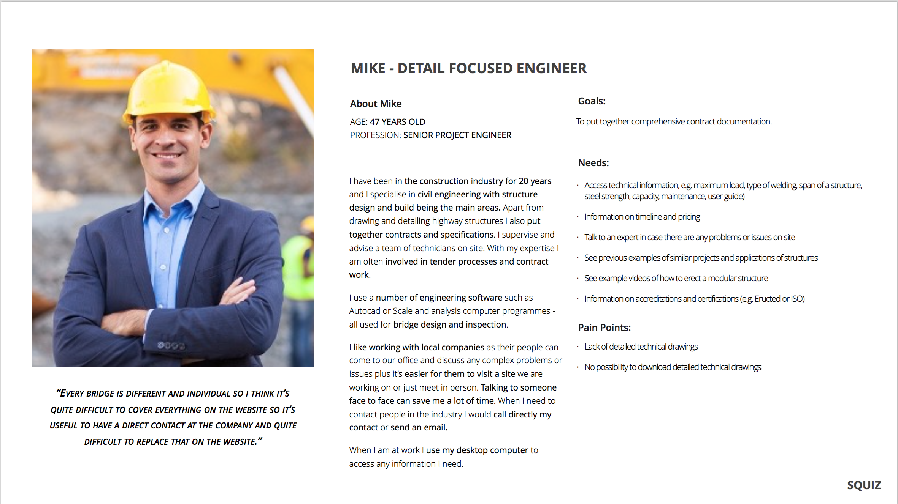
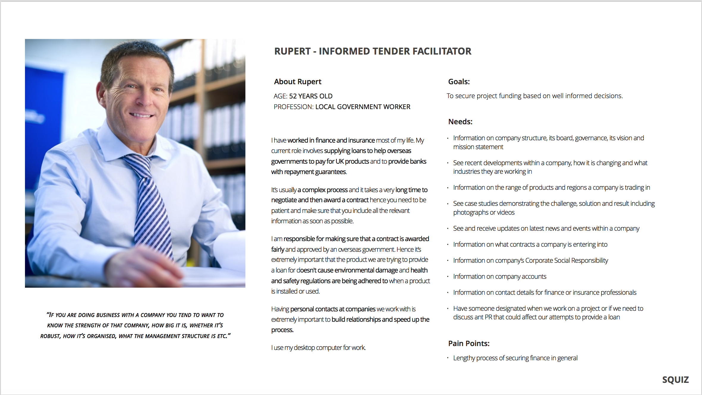
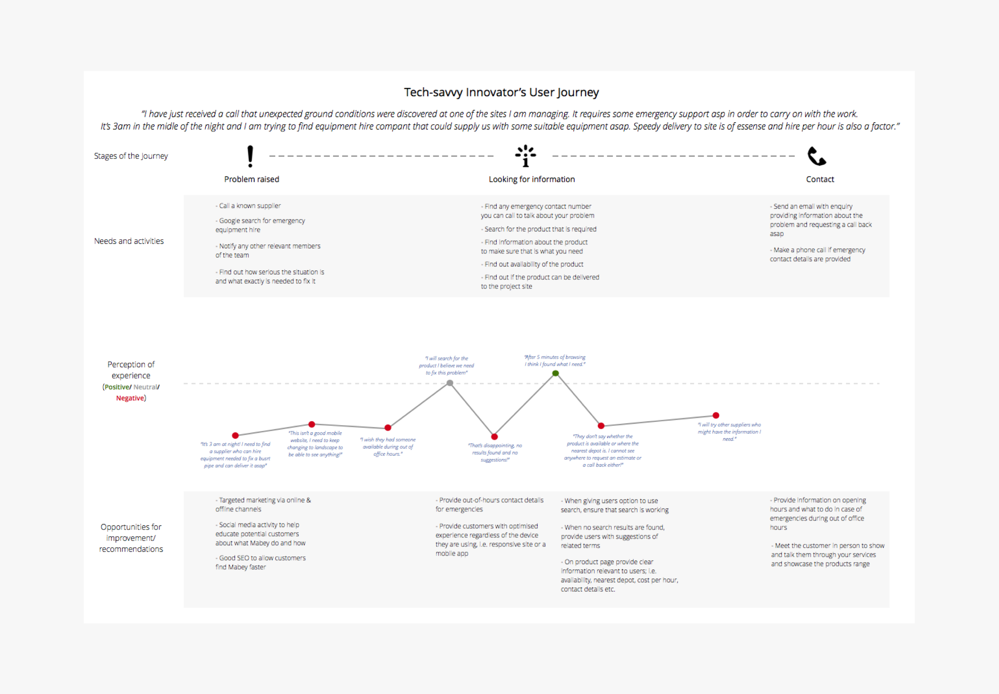
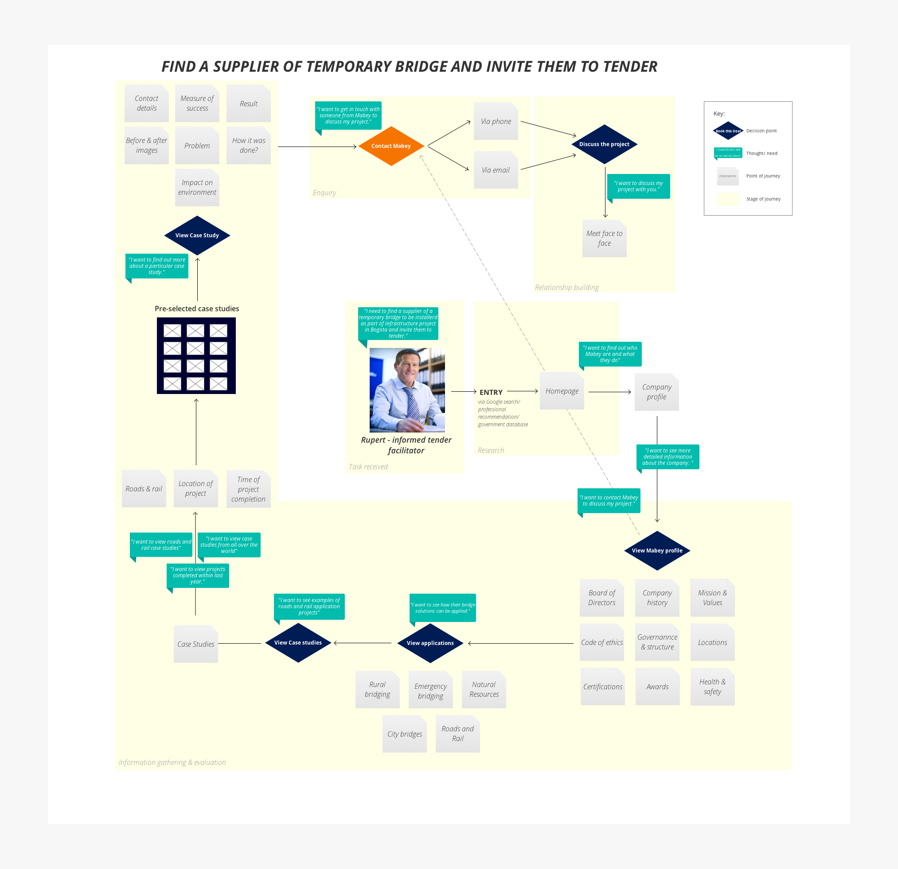

UX Research
Learn about the buisness and understand the needs of your customers.
Competitve Analysis
I looked at a number of sites offering similar products and services, in the UK, US and Australia. Majority of these sites were very much product focused with an integrated e-commerce service.... *** Needs more content here ***.


Stakeholder interviews
The purpose of the stakeholder interviews was to get to know the businness better and understand the problems and challenges it was facing as well as the objectives it has set out for itself. This, in order to ensure that the final product enabled to align the business needs and the needs of its customers. Being a global company with a large number of individual business seemed to be a particular issue that Mabey needed to be addressing as it was adding unnecessary complexity.

The business already had a solid customer base who were used to and liked doing business face to face and which customer base the business needed to retain. However, in order to stay competitive on the increasingly changing market, Mabey needed to win new and more customers, i.e. those who were more technology focused and who used the online services as their first resort.
What we also learnt during this stage was that the existing Mabey customers varied largely and while some of them were mainly interested in technical specification of the products or locality of the services, others might have been interested in the performance of the business and the history of projects completed around the world.
Customer interviews
The next stage of the project was to talk to a number of Mabey customers to find out how they were using Mabey services and establish of there were any painpoints in their current customer journeys. While the survey provided us with quantitave data, in order to further inform our design process we needed qualitative data and the answers to the Why's already established by the user survey. To this end, we interviewed 5 users. These interviews allowed us to get a deeper understanding of the users who will use the feature we were to design.


Personas
I used the data and information gathered from the user reserach to create Mabey personas. I order to do that I analysed the information provided by the stakeholder and the customers we interviewed and created affinity maps for goals, needs and issues by extracting this information from the interviews we carried out. To add more depth and personality to each persona I provided a description based on their work tasks, habits and tools used. This has led us to different 4 personas.


User journeys and user flows
I used the data and information gathered from the user reserach to create Mabey personas. I order to do that I analysed the information provided by the stakeholder and the customers we interviewed and created affinity maps for goals, needs and issues by extracting this information from the interviews we carried out. To add more depth and personality to each persona I provided a description based on their work tasks, habits and tools used. This has led us to different 4 personas.



Design Process
Make your goals clear and defined and validate your ideas early on!
Sketches
We started off design process by conducting a Design studio, during which we brainstormed and sketched ideas for the problesm identified duirng reserach phase. We tested those ideas by asking users to complete a task using a paper prototype we created from sketches. We then iterated on the skteches based on feedback received from users at this stage.

Wireframes
Once we were happy with the paper prototype, we proceeded onto digital wireframes. Considering our two different personas we needed to develop two flows: one for buyers and one for sellers. The UX research showed that while buyers were more likely to use a mobile or a tablet, sellers were mostly using laptops. Hence the two flows we developed were based on two different device types to reflect this.


Testing with Users
Test, test, test more & iterate!
Visual design
Following sign off on the wireframes we moved into visual design. During this stage I worked closely with the UI designer to try and improve on any elements that needed changing or improving. These included mainly the mapper and search elements.
Final product
From wireframes to visuals and how to create a MVP.
The final product
Next and last stage in the process was to develop visual design for our flows and then to create an interactive prototype using high-fidelity mock-ups. Having done user reserach upfront and several rounds of testing with users throughout the process allowed us to catch any issues or problems early on so building the final visual prototype was straightforward and stress free.

What I worked on
We are all different and individual but by bringing our best skills and strengthsto the table resulted in fantastic work that we were all very proud of!

Justyna Stachura (Me)
User research & UX Designer
Hugo Camacho
User research & UI Designer
Mrinal Seth
UX & UI Designer
Julia Shaer
Project Lead & Art Director